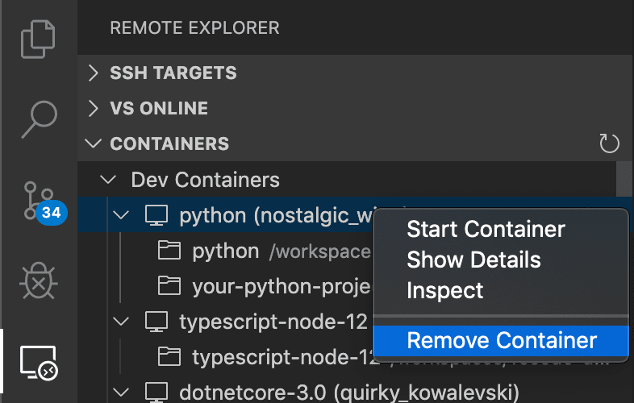
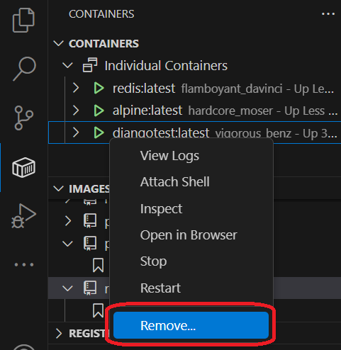

Dev Containers 提示和技巧
本文包含在不同的环境中启用和运行 Dev Containers 扩展的一些提示和技巧。
安装 Docker 的替代方法
你可以通过多种方式将 Docker 与 Dev Containers 扩展结合使用，包括：
- 本地安装的 Docker。
- 远程环境中安装的 Docker。
- 其他兼容 Docker 的 CLI，可以在本地或远程安装。
- 虽然其他 CLI 可能可以正常工作，但它们并未得到官方支持。请注意，附加到 Kubernetes 集群仅需要正确配置的 kubectl CLI。
你可以在替代 Docker 选项文档中了解更多信息。
自定义 AI 聊天响应
自定义指令使你能够描述通用的指南或规则，以获得符合你特定编码实践和技术栈的响应。
你可以将自定义指令与开发容器结合使用，为 Copilot 提供有关你连接的开发容器类型的更多信息（例如安装了哪些语言或工具链）。你可以通过以下几种方式实现这一点：
- 直接在
devcontainer.json中添加"github.copilot.chat.codeGeneration.instructions" - 像在本地一样使用
copilot-instructions.md文件Windows 版 Docker Desktop 提示
Docker Desktop for Windows 在大多数设置中都能正常使用，但有一些"陷阱"可能会导致问题。以下是一些避免这些问题的小提示：
- 考虑在 Windows 10 (2004+) 上使用新的 Docker WSL 2 后端。 如果你使用 Docker Desktop 的 WSL 2 后端，你可以用它来打开 WSL 内部以及本地的文件夹。容器也可以在 Windows 和 WSL 之间共享，并且这个新引擎不太容易出现文件共享问题。有关详细信息，请参阅快速入门。
- 退出"Windows 上的 Linux 容器 (LCOW)"模式。 虽然默认情况下是禁用的，但最新版本的 Docker 支持Windows 上的 Linux 容器 (LCOW)，可以让你同时使用 Windows 和 Linux 容器。然而，这是一个新功能，因此你可能会遇到问题，而且 Dev Containers 扩展目前仅支持 Linux 容器。你可以随时退出 LCOW 模式，方法是右键单击 Docker 任务栏项，然后从上下文菜单中选择 切换到 Linux 容器...。
- 确保你的防火墙允许 Docker 设置共享驱动器。 Docker 只需要在两台机器的本地 IP 之间进行连接，但某些防火墙软件可能仍会阻止任何驱动器共享或所需的端口。
以下是一些适用于旧版本 Docker for Windows 的提示，但现在应该已经解决了。如果你由于可能的回归而遇到奇怪的行为，以下提示在过去曾经解决了问题。
- 共享驱动器时使用 AD 域账户或本地管理员账户。不要使用 AAD（基于电子邮件的）账户。 AAD（基于电子邮件的）账户存在众所周知的问题，如 Docker issue #132 和 issue #1352 中所述。如果必须使用 AAD 账户，请在计算机上创建一个单独的本地管理员账户，专门用于共享驱动器的目的。按照此博客文章中的步骤进行全部设置。
- 使用字母数字密码以避免驱动器共享问题。 当被要求在 Windows 上共享驱动器时，系统会提示你输入计算机上具有管理员权限的账户的用户名和密码。如果你收到用户名或密码错误的警告，这可能是由于密码中的特殊字符导致的。例如，已知
!、[和]会导致问题。请将密码更改为字母数字字符来解决此问题。有关详细信息，请参阅此关于 Docker 卷挂载问题的 issue。 - 使用你的 Docker ID 登录 Docker（而不是你的电子邮件）。 Docker CLI 仅支持使用你的 Docker ID，因此使用电子邮件可能会导致问题。有关详细信息，请参阅 Docker issue #935。
如果你仍然遇到问题，请参阅 Docker Desktop for Windows 故障排除指南。
在 Docker Desktop 中启用文件共享
只有当你的代码位于与 Docker 共享的文件夹或驱动器中时，VS Code Dev Containers 扩展才能自动将你的源代码挂载到容器中。如果你从未共享的位置打开开发容器，容器将成功启动，但工作区将是空的。
请注意，对于 Docker Desktop 的 WSL 2 引擎，此步骤不是必需的。
要更改 Docker 的驱动器和文件夹共享设置：
Windows：
- 右键单击 Docker 任务栏项，然后选择 设置。
- 转到 资源 > 文件共享，然后勾选源代码所在的驱动器。
- 如果你看到有关本地防火墙阻止共享操作的消息，请参阅此 Docker 知识库文章以了解后续步骤。
macOS：
- 单击 Docker 菜单栏项，然后选择 首选项。
- 转到 资源 > 文件共享。确认包含源代码的文件夹位于列出的共享文件夹之一之下。
解决容器中的 Git 行尾问题（导致大量修改文件）
由于 Windows 和 Linux 使用不同的默认行尾符，Git 可能会报告大量除了行尾之外没有其他差异的已修改文件。为了防止这种情况发生，你可以使用 .gitattributes 文件或在 Windows 端全局禁用行尾转换。
通常，在仓库中添加或修改 .gitattributes 文件是解决此问题最可靠的方法。将此文件提交到源代码管理将有助于其他人，并允许你根据情况按仓库变更行为。例如，将以下内容添加到仓库根目录的 .gitattributes 文件，将强制所有文件使用 LF，但需要 CRLF 的 Windows 批处理文件除外：
* text=auto eol=lf
*.{cmd,[cC][mM][dD]} text eol=crlf
*.{bat,[bB][aA][tT]} text eol=crlf请注意，这适用于 Git v2.10+，因此如果你遇到问题，请确保已安装最新的 Git 客户端。你可以在此同一文件中添加仓库中其他需要 CRLF 的文件类型。
如果你仍然希望始终上传 Unix 风格的行尾 (LF)，可以使用 input 选项。
git config --global core.autocrlf input如果你希望完全禁用行尾转换，请改为运行以下命令：
git config --global core.autocrlf false最后，你可能需要重新克隆仓库才能使这些设置生效。
使用 Docker Compose 时避免在容器中设置 Git
有关解决此问题的信息，请参阅主容器文章中的与容器共享 Git 凭据。
解决在容器中进行 Git 推送或同步时挂起的问题
如果你使用 SSH 克隆 Git 仓库并且你的 SSH 密钥有密码短语，则 VS Code 的拉取和同步功能在远程运行时可能会挂起。
请使用没有密码短语的 SSH 密钥、使用 HTTPS 克隆，或者从命令行运行 git push 来解决此问题。
解决缺少 Linux 依赖项的错误
某些扩展依赖于某些 Docker 镜像中找不到的库。有关解决此问题的几个选项，请参阅容器文章。
加速 Docker Desktop 中的容器
默认情况下，Docker Desktop 只给容器分配计算机容量的一小部分。在大多数情况下，这已经足够了，但如果你正在执行需要更多容量的操作，则可以增加内存、CPU 或磁盘使用量。
首先，尝试停止你不再使用的任何正在运行的容器。
如果这不能解决你的问题，你可能想要检查 CPU 使用率是否真的是问题所在，或者是否有其他情况发生。检查此问题的一种简单方法是安装 Resource Monitor 扩展。当安装在容器中时，它会在状态栏中提供有关容器容量的信息。
如果你希望始终安装此扩展，请将其添加到你的 settings.json 中：
"dev.containers.defaultExtensions": [
"mutantdino.resourcemonitor"
]如果你确定需要为容器提供更多计算机容量，请按照以下步骤操作：
- 右键单击 Docker 任务栏项，然后选择 设置 / 首选项。
- 转到 高级 以增加 CPU、内存或交换空间。
- 在 macOS 上，转到 磁盘 以增加 Docker 在你的计算机上允许使用的磁盘量。在 Windows 上，此选项与其他设置一起位于"高级"下。
最后，如果你的容器正在进行磁盘密集型操作，或者你只是在寻找更快的响应时间，请参阅提高容器磁盘性能以获取提示。VS Code 的默认设置旨在优化便利性和通用支持，但可以进行优化。
清理未使用的容器和镜像
如果你看到 Docker 报告磁盘空间不足的错误，通常可以通过清理未使用的容器和镜像来解决此问题。有几种方法可以做到这一点：
选项 1：使用远程资源管理器
你可以通过选择远程资源管理器，右键单击要删除的容器，然后选择删除容器来删除容器。

但是，这不会清理你可能已下载的任何镜像，这些镜像可能会占用你的系统空间。
选项 2：使用 Container Tools 扩展
- 在 VS Code 中打开一个本地窗口（文件 > 新建窗口）。
- 如果尚未安装 Container Tools 扩展，请从扩展视图中安装。
- 然后，你可以转到容器资源管理器，展开容器或镜像节点，右键单击，然后选择删除容器/镜像。

选项 3：使用 Docker CLI 选择要删除的容器
- 打开一个本地终端/命令提示符（或使用 VS Code 中的本地窗口）。
- 键入
docker ps -a查看所有容器的列表。 - 从此列表中键入
docker rm <容器 ID>以删除容器。 - 键入
docker image prune以删除任何未使用的镜像。
如果 docker ps 无法提供足够的信息来识别你想要删除的容器，以下命令将列出由 VS Code 管理的所有开发容器以及用于生成它们的文件夹。
docker ps -a --filter="label=vsch.quality" --format "table \{{.ID}}\t\{{.Status}}\t\{{.Image}}\tvscode-\{{.Label \"vsch.quality\"}}\t\{{.Label \"vsch.local.folder\"}}"选项 4：使用 Docker Compose
- 打开一个本地终端/命令提示符（或使用 VS Code 中的本地窗口）。
- 转到包含你的
docker-compose.yml文件的目录。 - 键入
docker-compose down以停止并删除容器。如果你有多个 Docker Compose 文件，可以使用-f参数指定其他 Docker Compose 文件。
选项 4：删除所有未运行的容器和镜像：
- 打开一个本地终端/命令提示符（或使用 VS Code 中的本地窗口）。
- 键入
docker system prune --all。解决使用 Debian 8 的镜像的 Dockerfile 构建失败问题
当构建使用基于 Debian 8/Jessie 的镜像的容器时（例如旧版本的 node:8 镜像），你可能会遇到以下错误：
...
W: Failed to fetch http://deb.debian.org/debian/dists/jessie-updates/InRelease Unable to find expected entry 'main/binary-amd64/Packages' in Release file (Wrong sources.list entry or malformed file)
E: Some index files failed to download. They have been ignored, or old ones used instead.
...这是一个众所周知的 issue，由 Debian 8 被"归档"引起。较新版本的镜像通常通过升级到 Debian 9/Stretch 来解决此问题。
有两种方法可以解决此错误：
- 选项 1：删除所有依赖该镜像的容器，删除该镜像，然后尝试重新构建。这应该会下载一个不受此问题影响的更新镜像。有关详细信息，请参阅清理未使用的容器和镜像。
- 选项 2：如果你不想删除你的容器或镜像，可以在任何
apt或apt-get命令之前将此行添加到你的 Dockerfile 中。它为 Jessie 添加必要的源列表：# Add archived sources to source list if base image uses Debian 8 / Jessie RUN cat /etc/*-release | grep -q jessie && printf "deb http://archive.debian.org/debian/ jessie main\ndeb-src http://archive.debian.org/debian/ jessie main\ndeb http://security.debian.org jessie/updates main\ndeb-src http://security.debian.org jessie/updates main" > /etc/apt/sources.list解决使用电子邮件登录 Docker Hub 时的登录错误
Docker CLI 仅支持使用你的 Docker ID，因此使用电子邮件登录可能会导致问题。有关详细信息，请参阅 Docker issue #935。
作为解决方法，请使用你的 Docker ID 而不是电子邮件登录 Docker。
macOS 上 Hyperkit 的高 CPU 使用率
有一个 Docker for Mac 的已知 issue 可能导致 CPU 高占用率。特别是在监视文件和构建时会出现高 CPU 使用率。如果你在活动监视器中看到 com.docker.hyperkit 的高 CPU 使用率，而你的开发容器中几乎没有活动，那么你很可能遇到了此问题。请关注 Docker issue 以获取更新和修复。
使用 SSH 隧道连接到远程 Docker 主机
在远程 Docker Machine 或 SSH 主机的容器内开发文章介绍了如何在远程 Docker 主机上工作时设置 VS Code。这通常只需在 settings.json 中设置 Container Tools 扩展的 containers.environment 属性，或将 DOCKER_HOST 环境变量设置为 ssh:// 或 tcp:// URI 即可。
然而，由于 SSH 配置复杂性或其他限制，你可能会遇到在某些环境中此方法不可行的情况。在这种情况下，可以使用 SSH 隧道作为后备方案。
使用 SSH 隧道作为后备选项
你可以设置一个 SSH 隧道，将 Docker socket 从远程主机转发到本地计算机。
请按照以下步骤操作：
- 安装一个兼容 OpenSSH 的 SSH 客户端。
- 在你的用户或工作区
settings.json中更新 Container Tools 扩展的containers.environment属性，如下所示："containers.environment": { "DOCKER_HOST": "tcp://localhost:23750" } - 从本地终端/PowerShell 运行以下命令（将
user@hostname替换为远程用户和服务器的主机名/IP）：ssh -NL localhost:23750:/var/run/docker.sock user@hostname
VS Code 现在将能够附加到远程主机上的任何正在运行的容器。你还可以使用专用的本地 devcontainer.json 文件来创建/连接到远程开发容器。
完成后，在终端/PowerShell 中按 kbstyle(Ctrl+C) 关闭隧道。
注意： 如果ssh命令失败，你可能需要在 SSH 主机上启用AllowStreamLocalForwarding。
>
1. 在SSH 主机（而不是本地）上使用编辑器（如 Vim、nano 或 Pico）打开 /etc/ssh/sshd_config。
2. 添加设置 AllowStreamLocalForwarding yes。
3. 重新启动 SSH 服务器（在 Ubuntu 上，运行 sudo systemctl restart sshd）。
4. 重试。
持久化用户配置文件
你可以使用 mounts 属性在跨重建时持久化用户配置文件（以保留 shell 历史记录等内容）在你的开发容器中。
"mounts": [
"source=profile,target=/root,type=volume",
"target=/root/.vscode-server,type=volume"
],上述代码首先创建一个名为 profile 的命名卷，挂载到 /root，该卷将在重建后仍然存在。然后它创建一个匿名卷，挂载到 /root/.vscode-server，该卷在重建时会被销毁，这允许 VS Code 重新安装扩展和 dotfiles。
高级容器配置提示
有关以下主题的信息，请参阅高级容器配置文章：
- 添加环境变量
- 添加另一个本地文件挂载
- 更改或删除默认源代码挂载
- 提高容器磁盘性能
- 向开发容器添加非 root 用户
- 为 Docker Compose 设置项目名称
- 从容器内部使用 Docker 或 Kubernetes
- 同时连接到多个容器
- 在远程 Docker Machine 或 SSH 主机的容器内开发
- 减少 Dockerfile 构建警告
- 与容器共享 Git 凭据
扩展提示
虽然许多扩展无需修改即可正常运行，但有一些问题可能会导致某些功能无法按预期工作。在某些情况下，你可以使用其他命令来解决问题，而在其他情况下，可能需要修改扩展。远程扩展提示部分提供了常见问题和解决这些问题的技巧的快速参考。你还可以参考关于支持远程开发的主要扩展文章，获取有关修改扩展以支持远程扩展主机的深入指南。
问题和反馈
报告问题
如果你遇到 Dev Containers 扩展的问题，收集正确的日志非常重要，这样我们才能帮助你诊断你的问题。你可以使用 Dev Containers: Show Container Log 获取 Dev Containers 扩展日志。
如果你在使用其他扩展远程工作时遇到问题（例如，其他扩展在远程上下文中无法正确加载或安装），从远程扩展主机输出频道（输出：聚焦于输出视图）获取日志会很有帮助，然后从下拉菜单中选择 Log (Remote Extension Host)。
注意：如果你只看到 Log (Extension Host)，这是本地扩展主机，远程扩展主机没有启动。这是因为日志频道仅在日志文件创建后才创建，因此如果远程扩展主机没有启动，远程扩展主机日志文件就没有被创建，也不会显示在输出视图中。这仍然是包含在你的 issue 中的有用信息。
远程问题和反馈资源
我们有各种其他远程资源：
- 在 Stack Overflow 上搜索。
- 添加功能请求或报告问题。